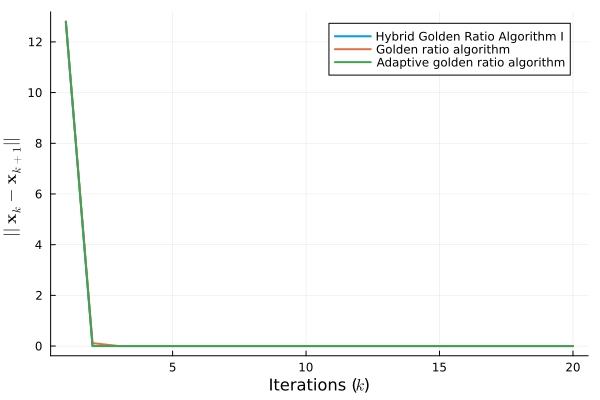

Sparse logistic regression
Consider a dataset of $M$ rows and $N$ columns, so that $\mathbf{A} = \text{col}(\mathbf{a}^\top_i)_{i =1}^M \in \mathbb{R}^{M \times N}$ is the dataset matrix, and $\mathbf{a}_i \in \mathbb{R}^{N}$ is the $i$-th features vector for the $i$-th dataset row. Moreover, let $\mathbf{b} \in \mathbb{R}^M$ be the target vector, so that $b_i \in \{-1,1\}$ is the (binary) ground truth for the $i$-th data entry. The sparse logistic regression consists of finding the weight vector $\mathbf{x} \in \mathbb{R}^N$ that minimizes the following loss function [6]
\[\begin{equation} \begin{split} f(\mathbf{x}) := \sum_{i = 1}^M \log\left(1 + \frac{1}{\exp(b_i \mathbf{a}^\top_i \mathbf{x})} \right) + \gamma \|\mathbf{x}\|_1 \\ = \underbrace{\mathbf{1}^\top_M \log(1 + \exp(-\mathbf{b} \odot \mathbf{A} \mathbf{x}))}_{=:s(\mathbf{x})} + \underbrace{\gamma \|\mathbf{x}\|_1}_{=:g(\mathbf{x})} \end{split} \end{equation}\]
where $\gamma \in \mathbb{R}_{> 0}$ is the $\ell_1$-regulation strength. The gradient for $s(\cdot)$, $\nabla s_\mathbf{x}(\mathbf{x})$, is calculated as
\[\begin{equation} F(\mathbf{x}) = \nabla s_\mathbf{x}(\mathbf{x}) = -\frac{\mathbf{A}^\top \odot (\mathbf{1}_N \otimes \mathbf{b}^\top) \odot \exp(-\mathbf{b} \odot \mathbf{A} \mathbf{x})}{1 + \exp(-\mathbf{b} \odot \mathbf{A} \mathbf{x})} \mathbf{1}_M \end{equation}\]
The problem of finding the minimizer for $(1)$ can be cast as a canonical VI, with $F(\mathbf{x}) := \nabla s_\mathbf{x}(\mathbf{x})$. Let's start by defining the train matrix, target vector, and regularization strength.
using Random, LinearAlgebra
using Monviso, JuMP, Clarabel, Distributions
Random.seed!(2024)
N, M = 500, 200
A = rand(Normal(0, 1), (M, N))
b = 2round.(rand(M)) .- 1
γ = 0.005norm(A' * b, Inf)From the definition, $\mathbf{F}(\cdot)$ and $g(\cdot)$ are defined as
F(x) = -sum((A' .* repeat(b', N)) .* exp.(-b .* A * x)' ./ (1 .+ exp.(-b .* A * x))'; dims=2)
L = 1.5Let's instantiate the proximal operator, the iterate functions, and create an initial point
model = Model(Clarabel.Optimizer)
set_silent(model)
@variable(model, y[1:N])
@variable(model, t)
@constraint(model, [t; y] in SecondOrderCone())
Π = prox(x -> t / γ; y=y, model=model)
hgraal_iter = hybrid_golden_ratio_algorithm_1(F; analytical_prox=Π)
graal_iter = golden_ratio_algorithm(F; analytical_prox=Π)
agraal_iter = adaptive_golden_ratio_algorithm(F; analytical_prox=Π)
x0 = rand(N)As examples, let's use the Hybrid Golden Ratio Algorithm I (Monviso.hybrid_golden_ratio_algorithm_1), the Golden ratio algorithm (Monviso.golden_ratio_algorithm), and the adaptive golden ratio algorithm (Monviso.adaptive_golden_ratio_algorithm)
GOLDEN_RATIO = 0.5(1 + sqrt(5))
max_iter = 20
residuals = (
hgraal = Vector{Float32}(undef, max_iter),
graal = Vector{Float32}(undef, max_iter),
agraal = Vector{Float32}(undef, max_iter)
)
let sol_hgraal = (xk = x0, x1k = rand(N), yk = x0, s1k = GOLDEN_RATIO/(2L), tk = 1, ck = 1),
sol_graal = (xk = x0, yk = x0),
sol_agraal = (xk = x0, x1k = rand(N), yk = x0, s1k = GOLDEN_RATIO/(2L), tk = 1)
for k in 1:max_iter
# Hybrid Golden Ratio Algorithm I
xk1, yk1, sk, tk1, ck1 = hgraal_iter(sol_hgraal...)
residuals.hgraal[k] = norm(xk1 - sol_hgraal.xk)
sol_hgraal = (xk = xk1, x1k = sol_hgraal.xk, yk = yk1, s1k = sk, tk = tk1, ck = ck1)
# Golden ratio algorithm
xk1, yk1 = graal_iter(sol_graal..., GOLDEN_RATIO/(2L))
residuals.graal[k] = norm(xk1 - sol_graal.xk)
sol_graal = (xk = xk1, yk = yk1)
# Adaptive golden ratio algorithm
xk1, yk1, sk, tk1 = agraal_iter(sol_agraal...)
residuals.agraal[k] = norm(xk1 - sol_agraal.xk)
sol_agraal = (xk = xk1, x1k = sol_agraal.xk, yk = yk1, s1k = sk, tk = tk1)
end
endThe API docs have some detail on the convention for naming iterative steps. Let's check out the residuals for each method.
using Plots, LaTeXStrings
plot(
1:max_iter, [residuals.hgraal, residuals.graal, residuals.agraal];
xlabel=L"Iterations ($k$)",
ylabel=L"$||\mathbf{x}_k - \mathbf{x}_{k+1}||$",
labels=[
"Hybrid Golden Ratio Algorithm I"
"Golden ratio algorithm"
"Adaptive golden ratio algorithm"
] |> permutedims,
linewidth=2
)